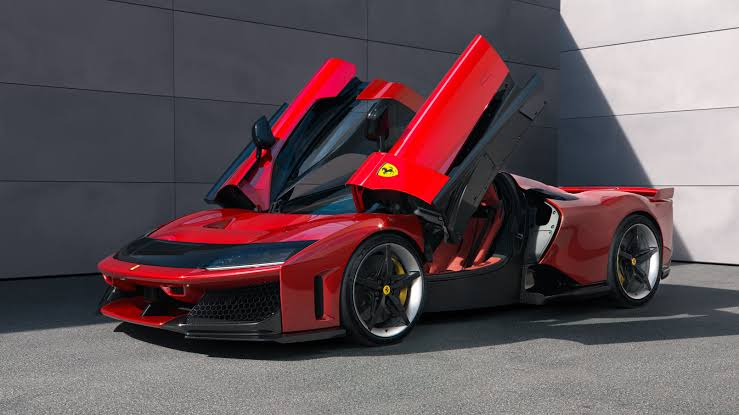
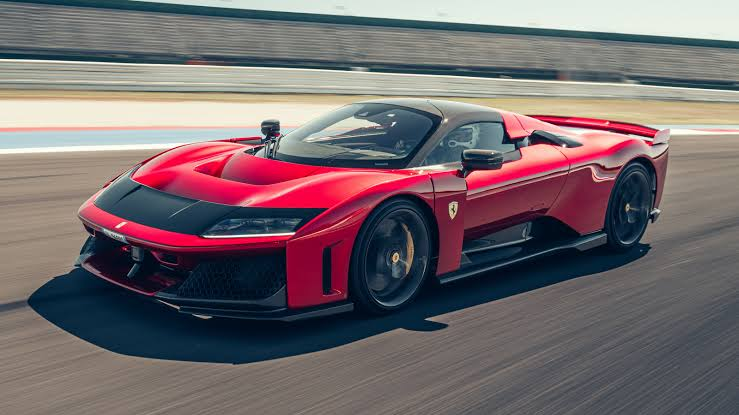

The Ferrari F80 (Type F250) is a limited production mid-engine, hybrid sports car built by the Italian automobile manufacturer Ferrari. Designed and named to commemorate the 80th anniversary of the company, it serves as Ferrari's flagship vehicle, and a successor to LaFerrari. The Ferrari F80 was revealed on October 17, 2024, at an event with production started in 2025.
The design of the F80 was inspired by the F40, which commemorated Ferrari's 40th anniversary, and the Ferrari Daytona SP3. Certain styling elements, specifically the black band on the bonnet, were inspired by the Ferrari 365 GTB/4 Daytona, similar to the Ferrari 12Cilindri


The F80 uses a hybrid powertrain, consisting of the 3.0L twin-turbocharged Tipo F163 CF 120° V6 petrol engine derived from the Ferrari 499P Le Mans Hypercar, and three electric motors. The engine produces 900 PS (662 kW; 888 hp), while the electric motors produce 300 PS (221 kW; 296 hp). The resultant specific output of the 2992cc engine individually is 296 hp/L, achieved in part via 3.7 bar (55.5 psi) of boost from the turbochargers. Motor Trend claimed both figures were the highest of any production car to date. Combined, the powerplants produce a total of 1,200 PS (883 kW; 1,184 hp).